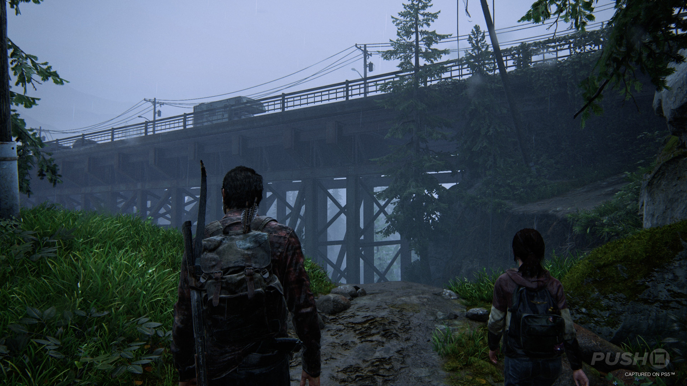

Campanha · Sobrevivência
The Last of Us
Joel, Ellie e um mundo destruído. Poucos recursos e muita tensão.

Sobre o jogo
The Last of Us, da Naughty Dog, acompanha Joel e Ellie atravessando um país tomado por uma infecção causada por um fungo. O jogo original saiu em 2013, e a versão Part I, refeita, veio em 2022. Tem ação, mas o maior destaque é a história.
Dicas
- Use o modo de escuta. Ele mostra onde os inimigos estão, mesmo atrás de paredes.
- Não gaste munição à toa. Ela é pouca, e às vezes a melhor saída é passar sem ser visto.
- Procure em tudo. Gavetas, mochilas e cantos escondem materiais importantes.
- Aprenda a fabricar. Kits de cura e itens de ataque podem salvar a partida.
- Distraia os inimigos. Jogar um tijolo ou uma garrafa atrai eles pra outro lado.
- Melhore as armas nas bancadas. Gaste as peças com o que você mais usa.
- Preste atenção nas conversas. Os diálogos dão pistas e contam muita coisa da história.
[Uma parte do jogo que você lembra até hoje, sem dar spoiler.]